Case study 02 · What It Takes to Move MA Design Management · UAL London College of Communication · 2025–26
Making safety everyone’s job, not just hers
A card game that brings the norms behind harassment to the family table, so teenagers can unlearn what adults defend.
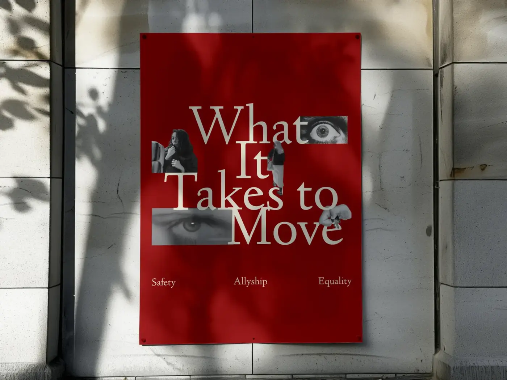
Problem
Safety on Delhi’s public transport is treated as a woman’s job. She changes routes, clothes and timings, while the norms behind the risk go unchallenged.
Insight
Every path led back to how men behave and are raised. Norms are learned early, through families, and bystander silence keeps them going.
Solution
The Script: a card game in two editions that brings those norms to the table at home and among friends.
Result
In testing, kids named stereotypes aloud and picked the game up fastest; mixed-age groups talked most.
01 Context
Safety is treated as a woman’s job
95% of women in Delhi say fear of male harassment restricts how they travel. Women change routes, clothing, timings and behaviour to manage risk, while the system that creates the risk stays unchanged.
“I always try to layer up, even in summers.”
Participant A, audio diary
“If it’s full, I’ll take the next one.”
Participant C, audio diary
02 Research
Focus groups, audio diaries and experts
Eleven months of mixed-method research, from November 2025 to September 2026. Women in Delhi described their journeys; experts in India gave depth and experts in the UK gave a comparison. I worked remotely through a local contact in Delhi, so audio diaries and an anonymous online drop box let women speak without being in the room.
Two frameworks, read as one matrix
To keep the work from settling on lighting and CCTV, I read the problem through two systems frameworks at once. Three Horizons (Sharpe, Curry and Hodgson) sets the time: today, the transition and the future we want. The Six Conditions of Systems Change (Kania, Kramer and Senge, 2018) sets the depth. Rows get deeper, and harder to change, from top to bottom. Inside the transition zone, COM-B and EAST turned gaps for each actor into tactics, and intersectionality (Crenshaw, 1989) ran across every cell: caste, religion and income change what safety means.
| Six conditions ↓ · Three horizons → | H1 · Business as usual | H2 · Transition zone | H3 · Desired future |
|---|---|---|---|
| Structural | |||
| Policies | No gender-sensitive policy in transport | Solution spaceBehaviour-change plan, built with COM-B and EAST | Complete accountability |
| Practices | Harassment normalised, unaddressed daily | No harassment: people living and letting live | |
| Resources | No funding directed to women’s agency | An equitable society | |
| Power Relational | Norms unquestioned within family and friends | Just systems, not patriarchal ones | |
| Connections Relational | Male entitlement unquestioned, unchecked | Equal everyday practices and stricter rules | |
| Mental models Transformative | Masculinity and safety norms unexamined | A paradigm shift in ways of living | |
| Explored through | Primary and secondary data | Insight triangulation to design interventions | Future-proofing the solution |
Methods and timeline
Primary and secondary research ran alongside analysis from the start. Design and testing began once the behavioural gaps were clear.
Primary
Secondary
Analysis
Design and test
- 1 Diagnosing the paradigm
- 2 Situating the norm
- 3 Evidencing the behaviour
- 4 Diagnosing gaps by actor
- 5 Designing and prototyping
- 6 Piloting and testing
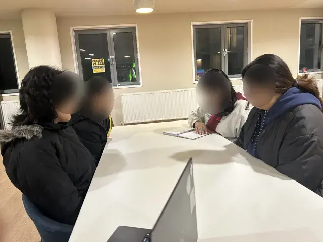
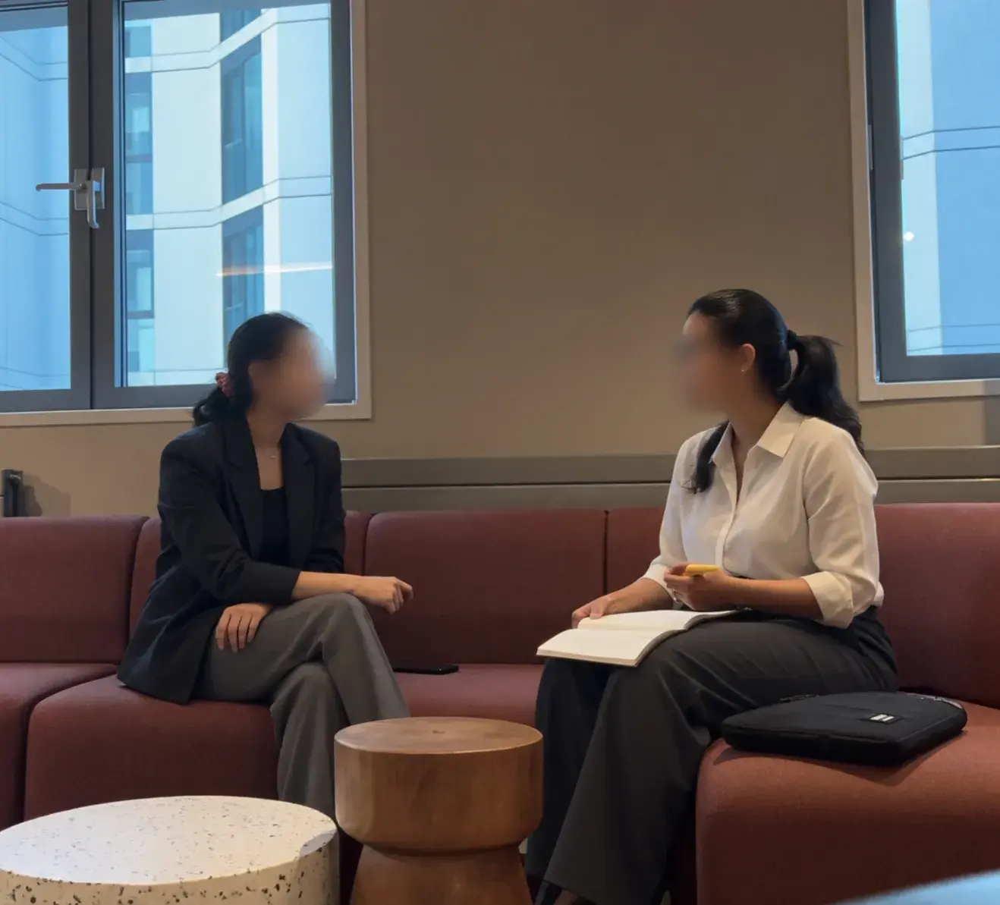
What the experts told me
Four in India for depth, three in the UK for comparison. Key points, paraphrased.
IN
“Teach a fifteen-year-old and he learns. Tell a forty-year-old and he shuts down.”
This turned the design towards adolescents.
IN
“Women are in work and education. The city hasn’t caught up.”
Urban architecture and legal frameworks lag behind women’s presence in public life.
IN
“Victims stay silent to protect their freedom at home.”
Family pressure blocks reporting: women fear losing their studies or their freedom to travel.
UK
“Peer-led change among men beats top-down messaging.”
Safety is context-specific, and cosmetic “pink-washing” is no substitute for structural inclusion.
UK
“Redesign the system, not the individual.”
Redesigning a high-violence London prison’s system, not its people, cut violence within four weeks.
UK
“Lighting helps. Community consultation is the real lever.”
Lighting and CCTV guarantee nothing; structured women’s safety audits do more.
Audio diaries from Delhi
Women aged 18 to 35 who use public transport kept audio diaries of their journeys. The same pattern ran through every one: the planning, covering up and waiting is work, and it is hers alone.
Diary 01
“I always try to layer up, even in summers.”
I always try to layer up even in summers, to not show any part of my skin while using public transport. It feels disgusting, like you are in a museum as a statue, and what for? I have cancelled way too many plans due to travelling alone at night.
Diary 02
“At night I have to cover myself up.”
I like to drive a lot. However, at night I have to cover myself up, so that no one notices it’s a woman driving, to avoid glances and stares, as well as the feeling of not feeling safe.
Diary 03
“If it’s full, I’ll take the next one.”
I wait to get space in the women’s coach. If it’s filled, I’ll take the next one rather than moving to the common coach. I have experienced someone brushing themselves against me in the common coach. I don’t want to experience it ever again.
Diary 04
“I wanted to get out, but I couldn’t.”
I once took a cab home at night. It was fine for a while, but then I could see the driver touching himself inappropriately. It made me feel disgusted and I wanted to get out, but I couldn’t, as he might just stop the car at any random place or take another sketchier path.
Audio was re-voiced and edited for privacy. The words are the participants’ own.
Look at a woman for longer and she notices, even outside her peripheral vision. Men generally don’t until there’s eye contact.
Observational research · That awareness is itself safety workAn exhibition that listened back
At the UAL show, the installation became a research space. Visitors answered prompts on paper tags, left their own stories and talked them through. A focus group went deeper on lived experience, and visitors pointed out a gap: disabled voices were missing.
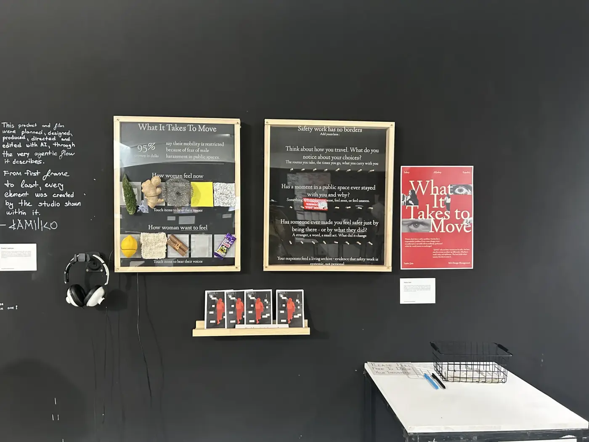
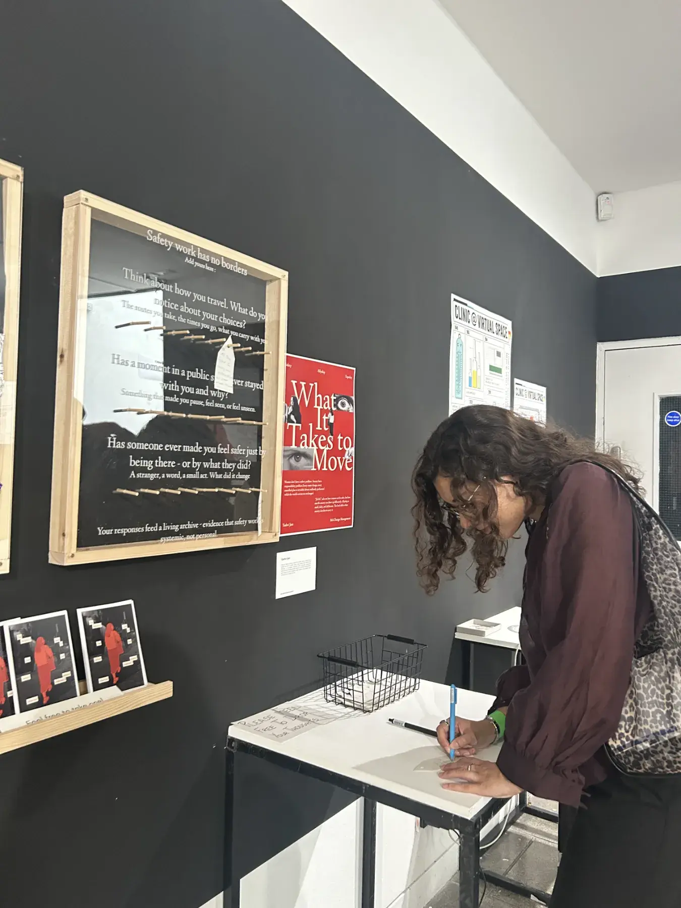
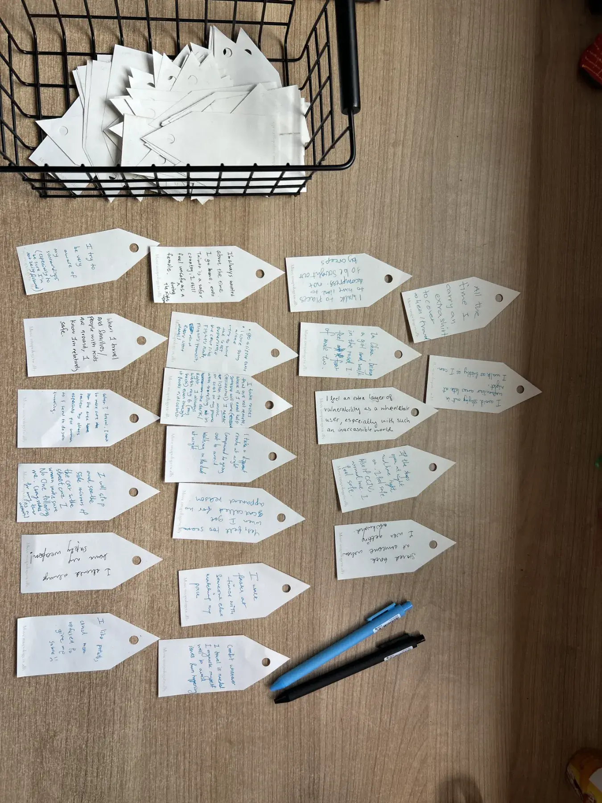
| Primary | Secondary |
|---|---|
| Focus groups · semi-structured interviews · expert interviews · audio diaries · journey mapping · anonymous Figma drop box · exhibition installation · Jaag workshop · observation · informal conversations | Literature review · policy analysis · datasets and statistics · precedent analysis · travel vlogs · social-media research |
A note on ethics
| Informed consent | Every participant signed a consent form covering purpose, data use and the right to withdraw at any time. |
|---|---|
| Anonymity | Identities, diaries and exhibition feedback were anonymised and stored securely. Quotes were checked with participants before use. |
| Care after disclosure | Support resources were shared after every session that touched on distressing experiences. |
| Positionality | Working remotely through a local contact in Delhi, I reflected on bias and power in mediated, cross-cultural research. |
03 Insight
Not how women can be safer
Lighting, CCTV and curfews treat a symptom. So the question became how design could make safety a shared civic responsibility, moving the focus from women managing risk to the boys who learn the norms.
Every path led back to how men behave, and how they are raised
However the problem was framed, nearly every finding returned to how men treat women and where they learn it. Thematic analysis put it in a problem tree. This project works on the first two roots; planners already work on the third.
Five things women want
From the focus group and diaries, five themes. Dots show how many of the five focus-group participants raised each one.
- Safety shouldn’t depend on clothing3 of 5
Appearance is treated as a risk. Women want it out of the equation, not just improved.
- Time of day shouldn’t decide risk5 of 5
The most consistent demand: an end to the curfew set by darkness rather than real danger.
- An end to self-surveillance4 of 5
The mental checklist before every trip weighs as much as the physical risk.
- Independence without a male escort2 of 5
Freedom now depends on borrowed male protection. Women want it unconditional.
- Accountability on offenders5 of 5
The clearest call for change across education, enforcement and infrastructure.
How the question sharpened
- How might we shift the cognitive and physical safety burden from women to ethical, intersectional service infrastructure, so that society is responsible?
- How might we shift the safety burden from women by challenging the mindset, so that society is responsible, while also providing safer infrastructure?
- Final: How might strategic communication design shift women’s safety in Delhi’s public transit from an individual burden to a shared civic responsibility?
The direction: design for teenagers, without accusation. A fifteen-year-old shown respectful behaviour is being educated; a forty-year-old told the same is more likely to shut down. So the intervention targets adolescence, through family and friends.
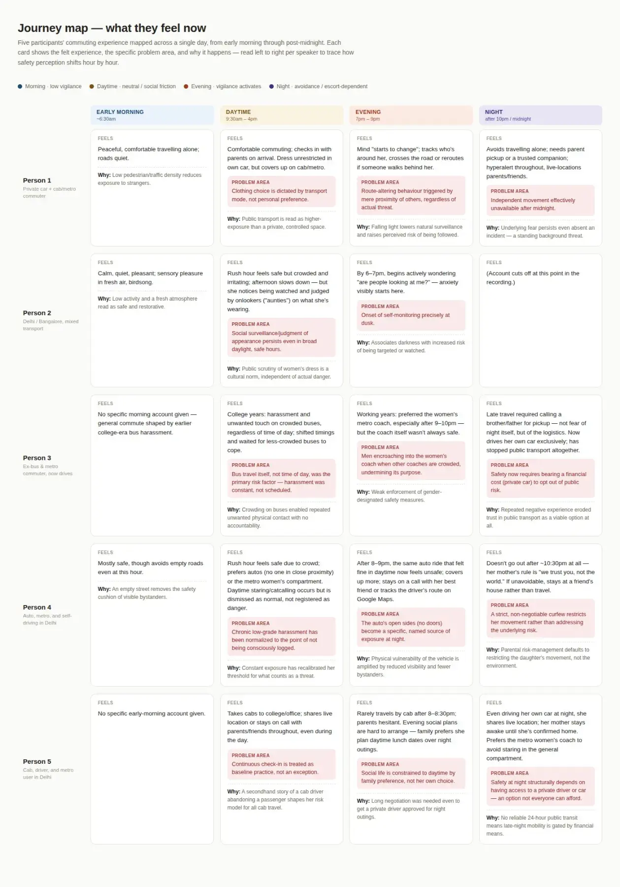
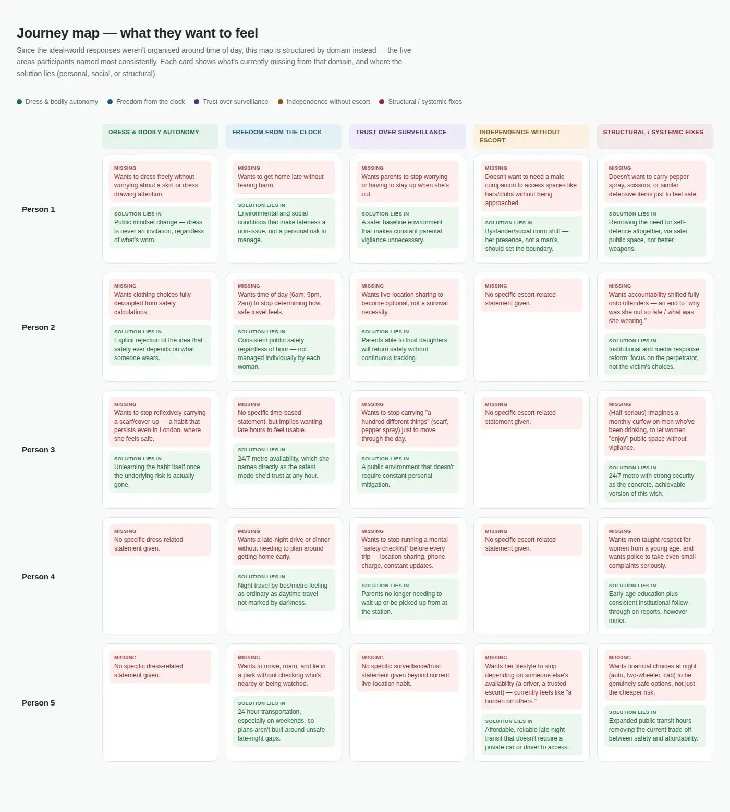
04 The Script
A card game in two editions
Prompts are adapted from participant interviews and documented Indian household stereotypes. The most convincing, heard-it-before answer wins, which pulls a private assumption into shared talk.
- The judge reads a fill-in-the-blank prompt.
- Everyone plays the most convincing answer card.
- Answers are read out anonymously.
- The most “heard-it-before” line takes the round.
- Then the table talks about why it sounded so familiar.
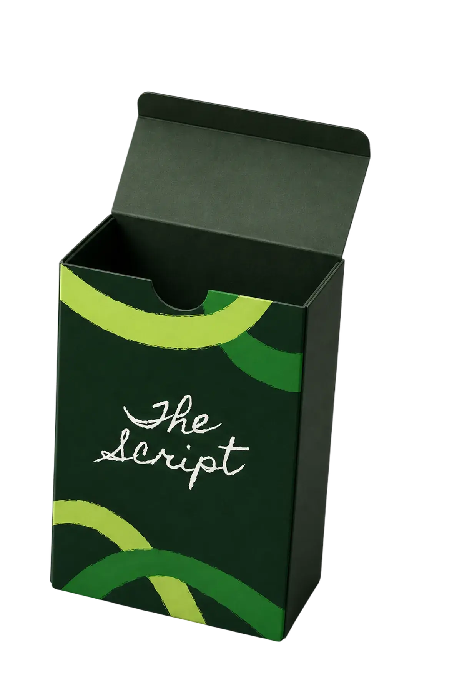
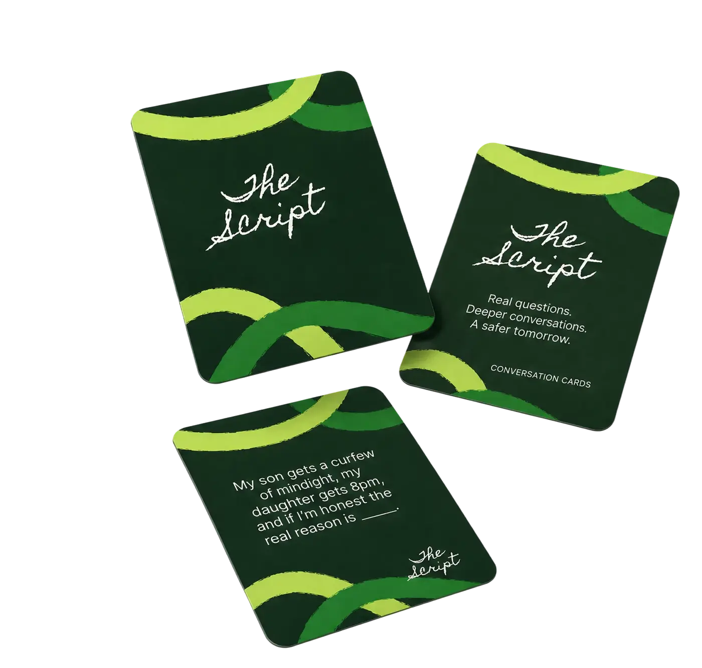
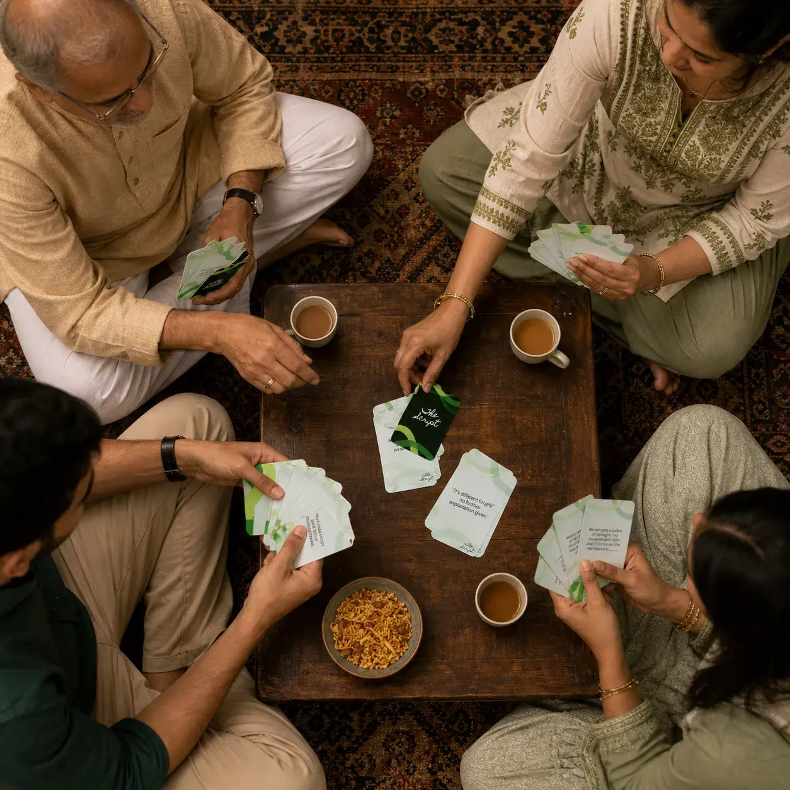
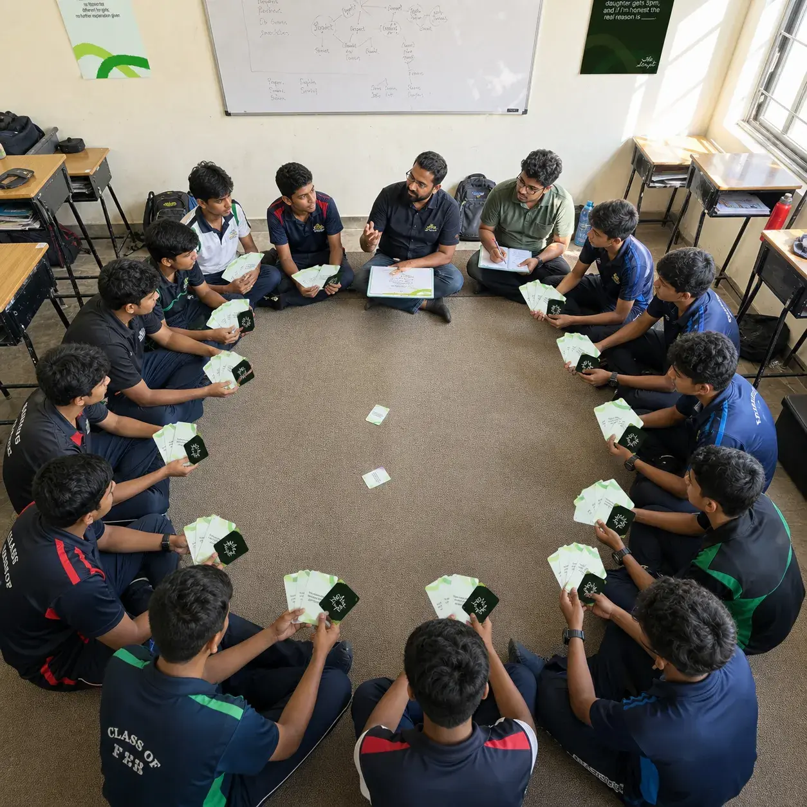
05 Testing
What testing showed
| Group | What we saw |
|---|---|
| Kids | More willing to name stereotypes aloud, and picked up the mechanics fastest |
| Women | High engagement; carried the conversation home to younger family members |
| Mixed-age groups | Richer discussion than single-generation tables |
| Boys with boys | More open and less guarded than in mixed-gender groups |
| Adults | Softened answers or slipped into teaching mode |
| Older men | Limited engagement, as expected: the game targets younger boys |
Qualitative: based on facilitator observation across family, friend-group and mixed-age tables, not a survey score.
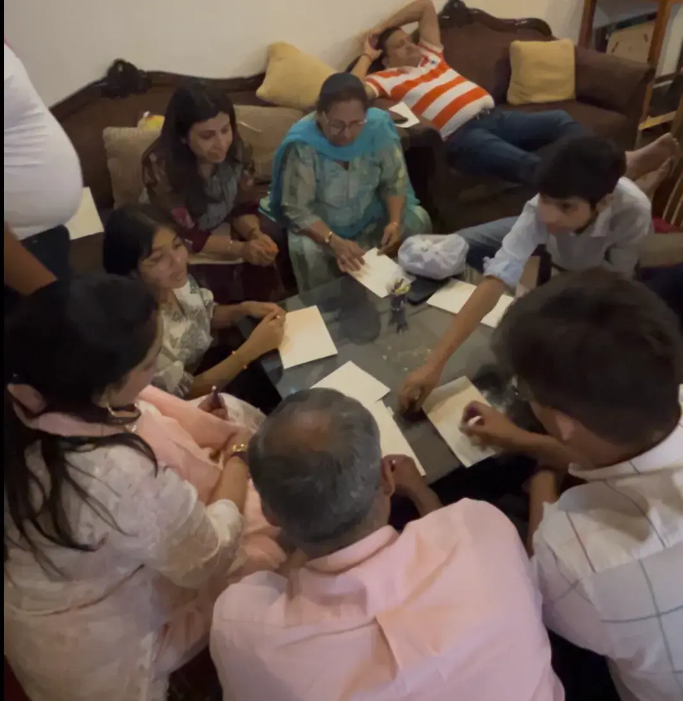
06 Foresight
A six-year plan, in a booklet
The game starts the conversation; this plan keeps it going. Strategic foresight for 2026–2032, built on ADKAR and EAST, with a roadmap, success metrics and where each edition plays.
Click a page to turn it, or use the arrows below.
What It Takes to Move · Strategy
Change that outlasts the game.
A six-year service and toolkit plan · 2026–2032
Turn the page →
The idea
Six years, one habit at a time.
A card game is a moment. Behaviour change is a habit. The plan moves teenage boys from noticing a norm to defending a new one, then keeps the pressure on for six years, so the new norm settles at home, in school and on the street.
This booklet walks through how the change is built, stage by stage, and when each piece rolls out.
The model
How the behaviour changes
ADKAR sets the order in which people adopt a behaviour. EAST makes each step land by keeping it easy, attractive, social and timely.
Stage 1 of 5
Awareness
“I notice it.”
Family self-check cards and a first campaign make the norm visible and open room for reflection.
Stage 2 of 5
Desire
“I want to be different.”
Gamified peer sessions with teenage boys; champions of change identified inside friend groups.
Stage 3 of 5
Knowledge
“I know what to do.”
Facilitated workshops on Connell and Bicchieri, delivered inside schools and youth clubs.
Stage 4 of 5
Ability
“I can do it in the moment.”
Bystander training, piloted early and practised again and again through goal-setting and feedback.
Stage 5 of 5
Reinforcement
“It’s just what we do.”
Ongoing campaigns, peer ambassadors and public momentum keep the change going over time.
Two phases
Enable first, then engage.
Awareness, Desire and Knowledge are built first through the toolkit; Ability and Reinforcement follow once partners and training are in place.
Roadmap · 2026–28
Short term: design, pilot, launch
- Card deck & workshop designSep 2026 – Mar 2027
- Pilot and iterate with familiesSep 2026 – May 2027
- Campaign launch and rolloutMar–Sep 2027
- Peer support & advocacyJul 2027 – Feb 2028
- Bystander & transport partner training pilotSep 2027 – Mar 2028
Roadmap · 2028–30
Mid term: partners, training, education
- Bystander & transport partner training pilotMar 2028 – Jun 2029
- Partner outreach (youth, schools)Nov 2027 – Mar 2029
- Women’s economic empowermentOct 2028 – Jan 2030
- Self-check education initiativeMar 2029 – Nov 2030
Roadmap · 2027–32
Long term: city-wide, policy, review
- Public bystander training scale-upJul 2028 – Oct 2031
- City-wide sensitisation campaignsDec 2028 – Apr 2032
- Transport and curriculum policyDec 2028 – Apr 2032
- Longitudinal mapping and reviewFeb 2027 – Apr 2032
Roadmap · 2026–2032
Every workstream at a glance.
ShortMidLongMid-point review
Success metrics
How we’ll know it’s working.
Awareness
Families who can name a norm after one gameA short self-check card before and after play. It shows whether the game makes an invisible rule visible.
Desire
Boys who opt in to a second peer sessionComing back by choice is the signal. It separates real interest from going along with a teacher.
Knowledge
Correct answers on bystander scenariosThe same scenarios before and after each workshop. It tests whether people know what to do, not just that they should.
Ability
Bystander actions reported in the momentShort diary prompts after training. They capture whether people actually stepped in, and how.
Reinforcement
How “normal” the new behaviour feelsRepeated norm-perception surveys in homes and schools to 2032, reviewed at the 2029 mid-point.
Where it plays · At home
Family Edition
Reach the household, where stereotypes are first passed on.
- Low-stakes and repeatable
- Needs no facilitator to enter the home
- Reaches homes an institution can’t
Risk alone: Can reinforce the norms it targets, with no outside reference in the room
Where it plays · Schools & NGOs
Friend Group Edition
Engage peer status, the force that actually shifts norms among teenagers.
- Break-time clubs, PSHE sessions, NGO youth workshops
- Brings in healthy masculinity, consent and bystander behaviour
Risk alone: Learning may not survive contact with home life
Where it plays · Combined
Close the loop
Friends supply the vocabulary; family gives a safe place to name it where it starts.
- One two-part intervention, not two products
- Judging logic differs for each setting
Next: An oral or picture-led deck for low-literacy players
From noticing a norm to defending a new one.
Reviewed continuously, with a mid-point evaluation in 2029.
← Back to the start
07 Looking back
What worked, and what comes next
What worked
Play lowered the stakes. People named stereotypes in a game that they would not name in a lecture.
What I learned
The game assumes players can read with confidence. That quietly excludes the people safety work also misses most.
Next
An oral and picture-led deck for low-literacy players, then pilots with schools and NGOs alongside a six-year rollout plan.
Next case study · 03
Ask Beta →